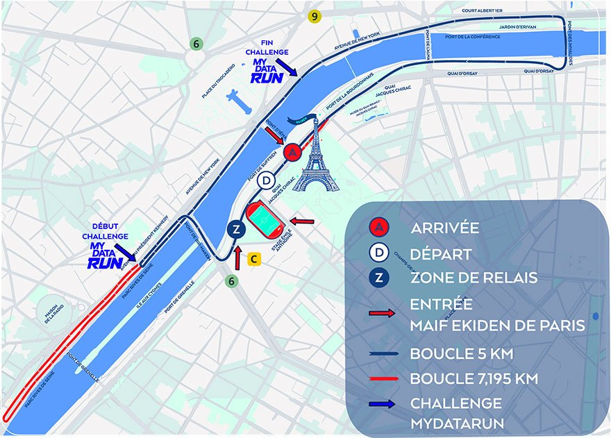

Athlètes repérés
Équipes et athlètes repérés, dans l'ordre des dossards. Touche un dossard pour ouvrir l'équipe.
Le dossier
L'essentiel 2026
- Complet deux mois avant la course. Label national FFA, qualificatif pour les France 2027.
- Fin du Half-Ekiden : seul le format marathon reste.
- Aucun tee-shirt distribué : cadeau dématérialisé, une vidéo finisher avec les passages de tous les relayeurs de l'équipe.
- Plus gros contingents : Fives 51 équipes, NGE 23, MAIF 20.
- Ekiden : « eki » la station, « den » transmettre. Premier ekiden au Japon en 1917, de Kyoto à Tokyo. Le témoin japonais : le tasuki, une écharpe.
Format & horaires
5
10
5
10
5
7,195
Boucle de 5 km. Le 6e relayeur (dossard à fond rouge) fait la boucle + l'aller-retour vers le pont de Grenelle.
Hugo Deck · au départ
Vainqueur de la Diagonale des Fous 2026 (16 octobre) en 22h54'19 sur environ 180 km et 10 000 m de D+, dès sa première participation, à 26 ans.
Près d'une heure d'avance sur Robin Juillaguet (23h51'54). Il a pris la tête dans Mafate, après une nuit menée par Vincent Esmiol.
Double vainqueur de la MaXi-Race (2025, 2026) et du KAT 100 by UTMB 2026. Athlète adidas Terrex. Remet les prix My Data Run hommes.
Records
| Chrono | Équipe, lieu | |
|---|---|---|
| Monde H | 1h57'06 | Kenya, Chiba 2005 : Ndambiri, Mathathi, Mwangi, Mogusu, Nyerere, Kariuki |
| Monde F | 2h11'41 | Chine, Pékin 1998 |
| Europe H | 2h02'37 | Belgique (Runners' Lab), Tongres 2022 : De Bock, Debognies, Van de Velde, Kimeli, Boulvin, Kersten |
| Europe F | — | Catégorie vacante |
| France H | 2h02'43 | Décines Meyzieu, Paris 2025 : Tixier 14'27, Bresc 28'55, Dussuyer 14'34, Louradour 29'31, Fourmont 14'27, Jard 20'51 |
| France F | 2h22'53 | Équipe de France, Copenhague 1996 : Duros, Murcia, Bertel, Guillot, Fournery, Rebelo |
| Paris H | 1h58'05 | 42 House 2025 : Chemiron 13'38, Kipkemoi 28'03, Cheserek 14'08, Aimun 27'52, Ondiso 14'11, Kibor 20'15 |
| Paris F | 2h22'30 | RMA 2025 : Porentru 16'29, Girard 34'56, Marchewka 17'15, Chebwogen (KEN) 32'16, Bazire 17'02, Périault 24'34 → pas un record de France (une Kényane) |
| Belgique F | 2h31'13 | Daring Club Leuven, Bruxelles 2012 |
À dire
- Record du monde = 21,6 km/h de moyenne, 2'46"5/km : 13'53 au 5 km, 27'45 au 10 km.
- Il reste 2'24" plus rapide que le record du monde du marathon de Sabastian Sawe (1h59'30, Londres 2026).
- Record de France H : 14'32 au 5 km, 29'05 au 10 km, 20'55 au dernier relais.
- Record de France F : 16'56 au 5 km, 33'52 au 10 km, 24'22 au dernier relais.
- Meilleurs Français par relais à Paris : Schrub 14'02 (R1, 2022), Bresc 28'55 (R2, 2025), Dussuyer 14'34 (R3), Chahdi 28'54 (R4, 2022), Fourmont 14'27 (R5), Gondouin 20'41 (R6, 2022).
Histoire & palmarès
Palmarès scratch
2013 Japon 2h15'14 · 2014 « France » 2h07'47 · 2015 Unirun 2h11'03 · 2016 Unirun 2h13'41 · 2017 Unirun 2h14'33 · 2018 Alès Cévennes 2h08'23 · 2019 Unirun 59 2h10'22 · 2021 Pierrefitte MA 2h13'21 · 2022 Team adidas 2h04'40 · 2023 Racing MA 2h14'53 · 2024 Zoom Volt Runners ≈2h11'33 · 2025 42 House 1h58'05
Femmes : 2018 St-Julien 74 2h29'50 · 2021 Team Lenglen 2h43'15 · 2022 St-Julien 74 2h29'34 · 2023 Infinity I-Run 2h45'57 · 2024 Racing CF 2h33'23 · 2025 Racing MA 2h22'30
Mixte : 2017 RCF Issy Avia · 2018 SPN Vernon · 2021 Garde républicaine 2h20'38 · 2022 Bocage Vendée · 2023 On/Off 2h16'47 · 2024 Boulogne AC 2h22'41 · 2025 RMA 2h17'19
Plateau & objectifs
Dossard 1 · Faster Toget'her : six internationales pour le record de France F (2h22'53).
Dossard 3 · Pays de Fontainebleau : Carvalho, Frère… pour le record de France H (2h02'43).
Dossards 4 et 5 · US Braine-Waterloo : records de Belgique F (2h31'13) et H (2h02'37).
1613 · Police nationale 1 : Bourgoin au R1, Cornelis (aviron) au R3, Périault au R6. 1609 · Police 2 : Paoletti, Barouh, Peron.
Doyenne de la startlist : Françoise Le Gall, 80 ans (306.3, CA Sports 2).
Toutes les fiches individuelles : onglet Recherche → ★ Repérés.
Parcours & patrimoine

Animations
- Pont de Bir-Hakeim : encouragement adidas Runners
- Av. Kennedy → av. de New York : challenge 1 km My Data Run
- Passerelle Debilly : zone MAIF, DJ et speaker
- Tunnel de l'Alma : set lumineux, DJ
- Sous le pont des Invalides : Timbao (batucada)
- Sous le pont de l'Alma : Kif Orchestra
- Souterrain de Varsovie : Bichat Blouse Brothers
Patrimoine
- Tour Eiffel : 330 m avec l'antenne, 1 665 marches, 2,5 millions de rivets, 18 000 pièces, 10 100 t. Construite en 2 ans, 2 mois et 5 jours, inaugurée le 31 mars 1889. 6 millions de visiteurs/an. Repeinte tous les 7 ans environ (60 t de peinture).
- Stade Émile-Anthoine (15e, rue Jean-Rey) : piste éclairée de plus de 300 m, 6 couloirs. Village, podium et protocole. Arrivée jugée sur sa piste en 2022.
- Bir-Hakeim (1905) : deux étages, métro 6 au-dessus. Nom donné en 1949 en hommage à la bataille de 1942.
- Alma : le Zouave sert d'échelle des crues (1910 : l'eau aux épaules).
- Iéna (1814), passerelle Debilly (Expo 1900), palais de Chaillot en face.
Mémo terrain
Dossard 310-2 = équipe 310, relais 2. Bandeau : violet club FFA vert entreprise bleu grand public. Fond rouge = 6e relayeur.
Zone de relais (quai Jacques-Chirac, 25 boxes) : 1201-2200 entreprises · 301-1200 grand public · 1-300 clubs FFA (au plus près de la sortie).
Podiums 12h
À corriger au micro
- Hugo Deck (pas « Dreck »).
- Florian Carvalho.
- Village ouvert dimanche 1er novembre (pas samedi).
- Le 2h22'30 du RMA n'est pas un record de France.
Messages micro
Remerciements partenaires
La Fédération Française d'Athlétisme remercie les partenaires du MAIF Ekiden de Paris 2026 :
• MAIF, partenaire titre et principal de l'événement
• adidas et le Crédit Mutuel, ses partenaires principaux
• i-Run.fr, fournisseur officiel
• RMC et Le Parisien, ses partenaires médias
• la Ville de Paris et la Région Île-de-France, ses partenaires institutionnels
Nous remercions également l'ensemble des bénévoles qui rendent possible l'organisation de ce bel événement !
Ecobox MAIF
Sur le village, la MAIF met à disposition des Ecobox pour déposer vêtements et matériel de sport qui ne vous servent plus. Donnez une deuxième vie à vos affaires inutilisées !
Éco-responsabilité
Le MAIF Ekiden de Paris est l'événement référence éco-responsable, avec le soutien de son partenaire principal, la MAIF. La FFA renforce sa démarche RSE pour la pratique d'un sport responsable.
Cette année encore, aucun tee-shirt de course n'est distribué. Le MAIF Ekiden de Paris offre à tous les coureurs un cadeau dématérialisé : une vidéo finisher avec l'ensemble des passages des relayeurs de son équipe.
Rampes à eau pour zéro bouteille, ravitaillement local avec des produits d'Île-de-France, toilettes sèches, tri des déchets et des biodéchets avec Hector le Collector, parking à vélos gratuit.
Challenge My Data Run
Aujourd'hui, il y a un défi dans le défi : le Challenge Mydatarun !
Sur le kilomètre le plus exigeant du parcours, ça va se jouer au chrono : relances, faux plat, tunnel… il va falloir tout donner ! Gardez-en sous le pied : ce kilomètre peut faire la différence.
Pour ceux qui suivent la course, rendez-vous sur le suivi live de l'application : performances et classement du Challenge Mydatarun en direct.
Les 5 hommes et les 5 femmes les plus rapides sur ce kilomètre seront récompensés.
Un kilomètre. Un chrono. Un challenge. À vous de jouer !
Coachs FFA & échauffements
Pour bien courir, tout commence par un bon échauffement ! Aujourd'hui, 12 coachs FFA accompagnent les équipes Privilège sur les péniches, avec des échauffements dédiés et leurs derniers conseils.
Pour tous les coureurs : rendez-vous sur le podium du stade Émile-Anthoine. À 8h, 8h30 et 9h30, Sanounou Traoré, du Cergy-Pontoise Athlétisme, vous guide pour faire monter le cardio.
Avant de rejoindre votre sas, passez par le podium : on s'échauffe ensemble avec la FFA !
Le village (stade Émile-Anthoine, 7h30-15h)
Consigne · 3 échauffements avec coach FFA (8h, 8h30, 9h30) · ravitaillement fruits frais, fruits secs et épicerie en vrac · zone de récupération avec kinés (huiles Eona) et pressothérapie (Ryma) · borne photo · atelier pancartes d'encouragement en carton upcyclé et maquillage (tente FFA) · jeux en bois.
Stand MAIF : animations Sport Planète et flocage de tee-shirt avec Oui Are Makers (ramenez votre tee-shirt !) · Ecologic : ateliers DIY et collecte de matériel de sport · Good Move : équilibre alimentaire avec une diététicienne · expo « 100 marathons vus du ciel » (Uni-Vert Sport) · Santé publique France : lancement du Mois sans tabac · Police nationale · food trucks (crêpes, sandwichs).
Live & chrono
Ouvrir le live Breizh Chrono ↗Temps de course
Mes ajouts
Les notes ajoutées sur ce téléphone (bouton « + note » sous un coureur). Elles ne sont pas partagées avec l'autre appareil.